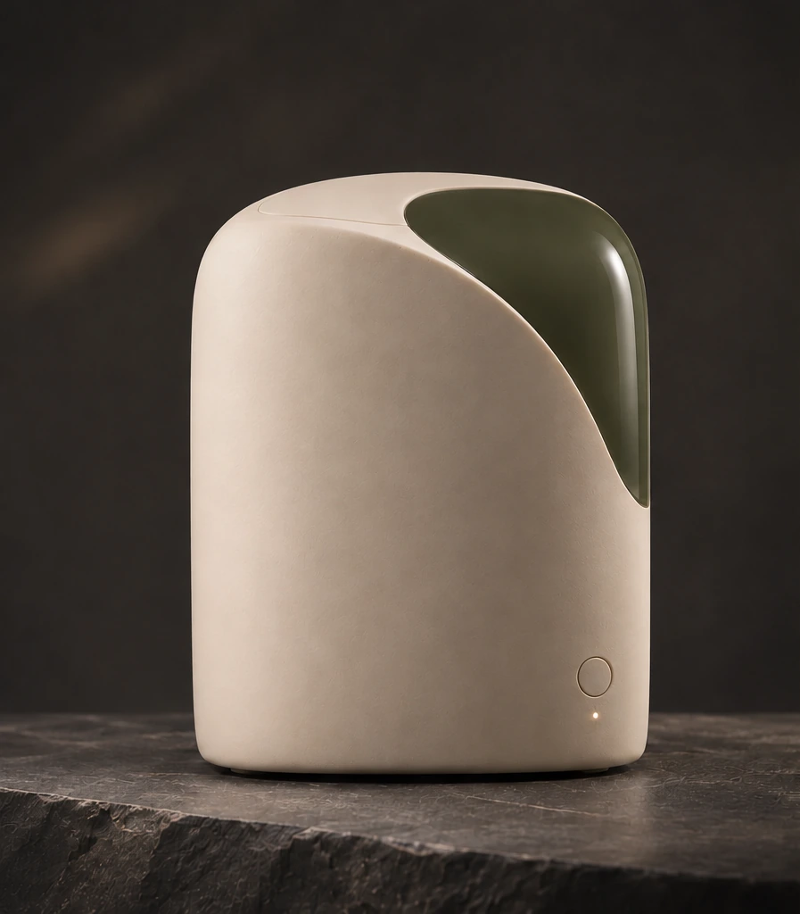
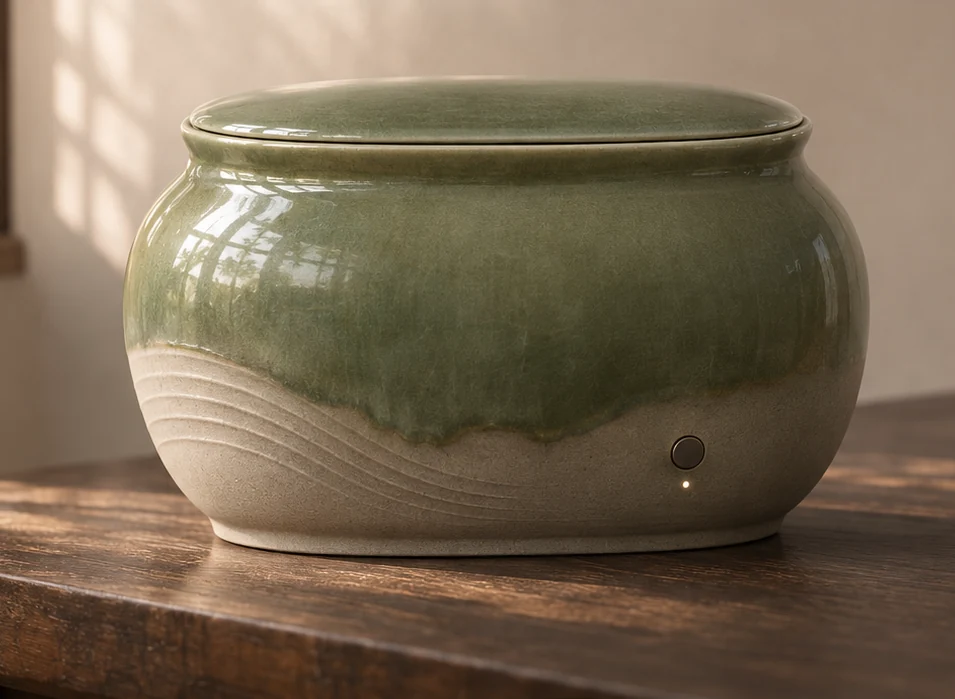
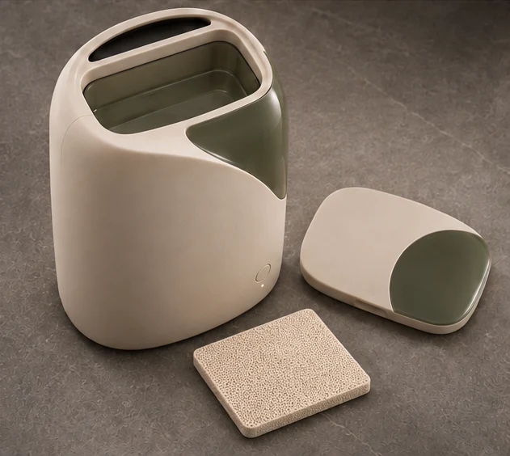
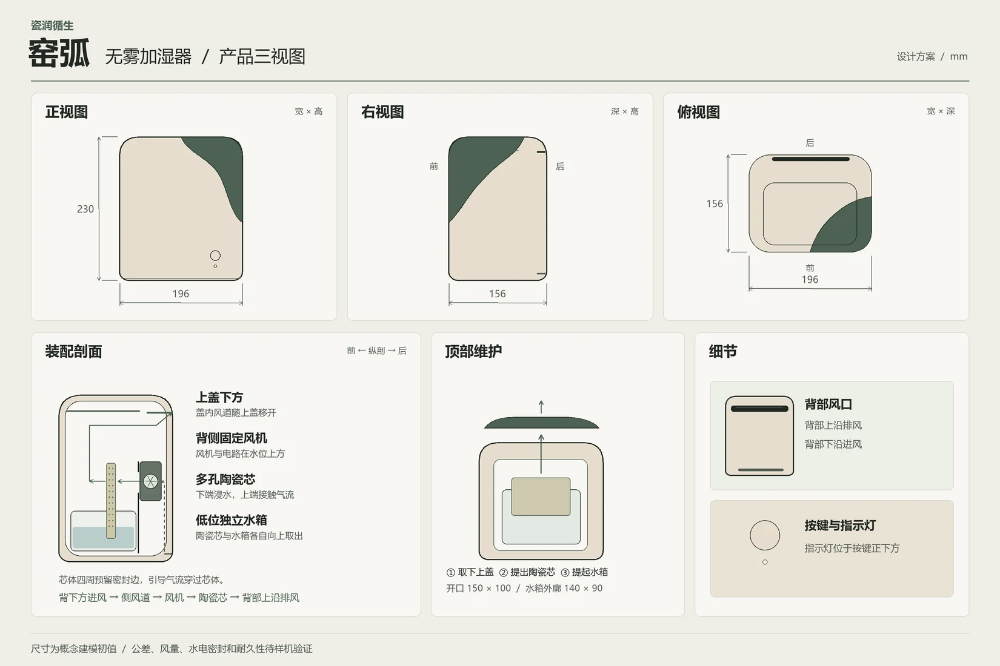

窑弧
陶瓷加湿器概念。可切换查看三种器型与顶盖设计。

窑弧 · 顶开式
润白陶壳搭配深青釉面。釉面沿着顶盖延伸至机身一侧。
顶盖可向上提起。下方有开盖渲染和三视图。

石湾陶坛
保留日用陶坛的低矮比例、圆肩和收口。青釉覆盖上半部，底部保留浅陶色。

陶狮交互
顶盖提手取自石湾陶狮的轮廓。提起时，弧形开口为手指留出空间。
顶开式结构细节




陶瓷加湿器概念。可切换查看三种器型与顶盖设计。

润白陶壳搭配深青釉面。釉面沿着顶盖延伸至机身一侧。
顶盖可向上提起。下方有开盖渲染和三视图。

保留日用陶坛的低矮比例、圆肩和收口。青釉覆盖上半部，底部保留浅陶色。
顶盖提手取自石湾陶狮的轮廓。提起时，弧形开口为手指留出空间。

